Intro to OOP · Part 1
Programming paradigms
A programming paradigm is a method or style of writing programs. It describes how a programmer thinks about a problem and how the solution is structured in code: how the logic, the data and the flow of execution are organised. In one line, a paradigm answers:
“How should a program be written and organised?”
Why paradigms are needed
In the early days of programming, programs were small and simple: a single person could write and manage the entire program easily. As time passed, software systems became larger and more complex, and programs started containing thousands or even millions of lines of code. With increasing complexity, programmers began facing several problems:
Hard to understand
Code became difficult to understand. Nobody can hold the whole program in their head.
Ripple effects
Changes in one part affected other parts.
Hard to reuse
Reusing code was hard: it is tied to one program and can’t be lifted out.
Slow to maintain
Maintaining and updating software became time-consuming.
To solve these problems, programmers developed different programming paradigms. Each paradigm gives a structured way to organise programs so they are easier to write, understand and maintain.
Types of programming paradigms (overview)
The programming paradigms covered in this lecture are:
| Paradigm | Organises the program around… |
|---|---|
| Procedural (function-oriented) | functions, or procedures, called in order |
| Object-oriented (OOP) | objects that bundle data and behaviour |
| Modular | separate modules (files) that each handle one area |
Procedural (function-oriented) programming
Procedural programming is one of the oldest paradigms. The program is split into functions; each does one task, and the program runs by calling them in a particular order. The focus is on steps, not on data: the logic decides how data flows from one function to the next.
def read_marks():
return [70, 80, 90]
def calculate_total(marks):
return sum(marks)
def display_result(total):
print("Total Marks:", total)
marks = read_marks()
total = calculate_total(marks)
display_result(total)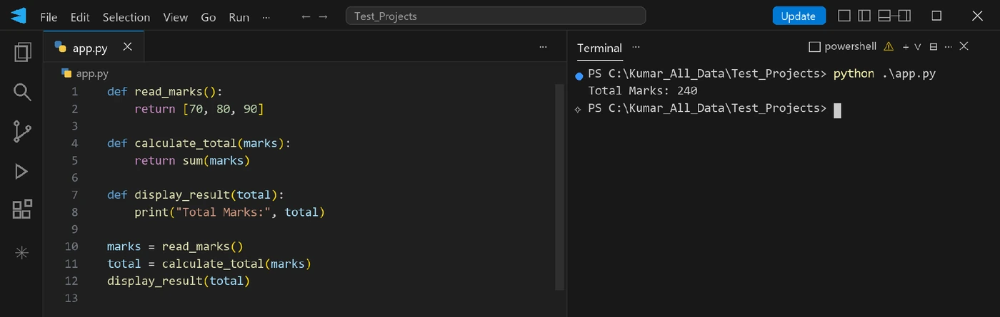
Total Marks: 240.In this example:
- The program is divided into functions.
- Each function performs one task.
- Data is passed between functions.
- Functions control the program flow.
Here, the focus is on functions performing operations, not on grouping data and behaviour together.
Real-world version: a shop’s billing program
def read_prices():
return [120, 45, 300]
def calculate_bill(prices):
return sum(prices)
def print_bill(bill_total):
print("Bill Total:", bill_total)
prices = read_prices()
bill_total = calculate_bill(prices)
print_bill(bill_total)Bill Total: 465This style works well for small programs. As programs grow, managing many functions and the data they share becomes difficult.
Where procedural programming struggles
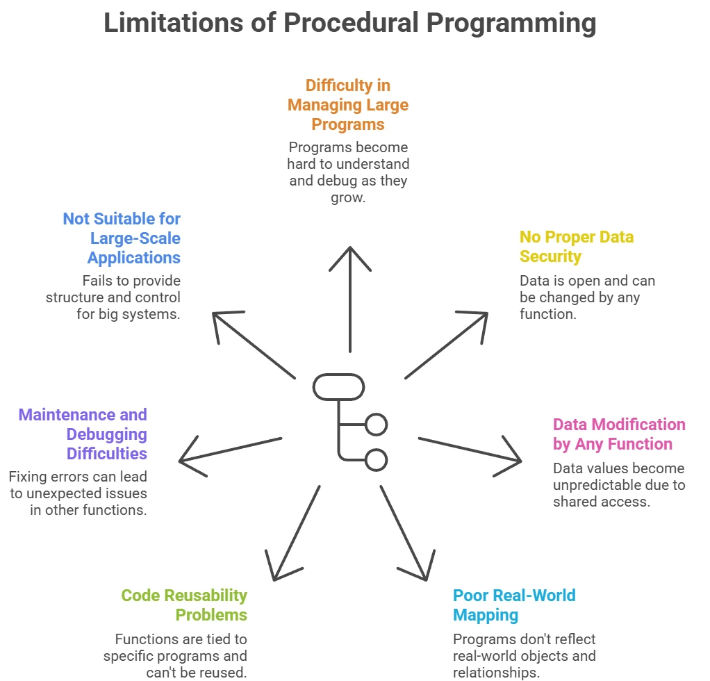
1 · Large programs are hard to manage
A big program has many functions, and it becomes hard to see which function does what. When something breaks, finding where is difficult. Like a notebook with 200 steps on different pages: if one step is wrong, finding it is confusing.
2 · No proper data security
Data is open: any function can change it. Nothing restricts who can read or modify important values. Like keeping your phone unlocked all the time: anyone can change your contacts.
marks = 80
def change_marks():
global marks
marks = 0 # changed without permission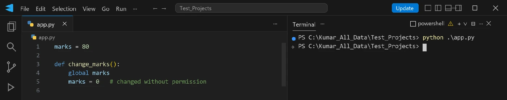
change_marks() from overwriting marks.Any function can freely change important data, which means the data is not protected at all. If change_marks() is ever called, marks silently becomes 0.
Real-world version: a bank balance stored as a global, so any function can wipe it out.
account_balance = 25000
def apply_charges():
global account_balance
account_balance = 0 # balance wiped out without permission3 · Data can be modified by any function
Because data is shared, any function can change it at any time, and you can’t tell who changed it or why. If five people can write on the same paper, you won’t know who erased your answer.
score = 50
def update1():
global score
score = 70
def update2():
global score
score = 30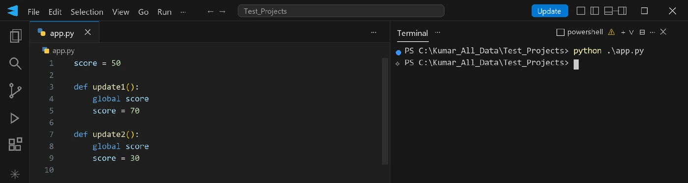
score.Since multiple functions can change the same data, the final value of score depends on which function ran last, so it becomes unpredictable and confusing.
4 · Poor real-world mapping
Procedural programming does not match how things exist in real life. Real-world things are objects, but procedural code thinks only in steps. In real life, a student has a name, roll number and marks together; in procedural programming these are handled separately, not as one unit.
name = "Rahul"
roll_no = 12
marks = 85
def print_details():
print(name, roll_no, marks)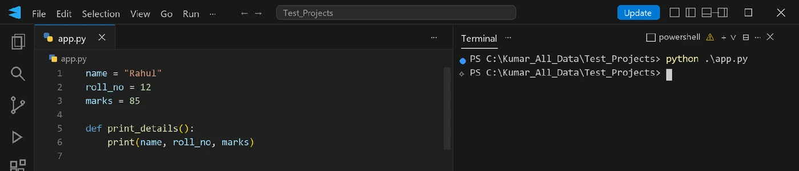
Student data is scattered as separate variables instead of being grouped as one real-world entity.
5 · Code reusability problems
Functions depend on shared data, so they cannot be reused easily in another program; the function works only in that specific program. Like a charger that works in one house and nowhere else.
total = 0
def add(value):
global total
total += value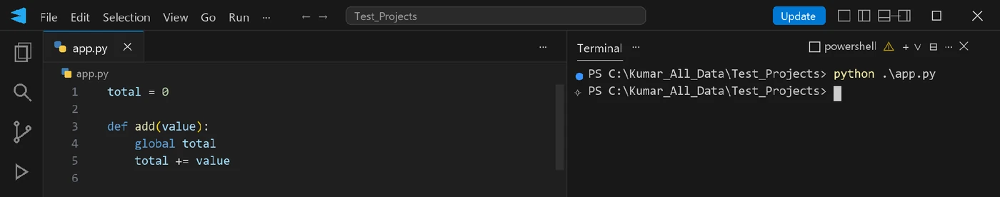
add() only works where a global total exists.This function depends on a global variable, so it cannot be reused independently: you can’t copy add() into another program on its own.
6 · Maintenance and debugging are hard
Fixing errors becomes hard because many functions are connected to the same data. Changing one function may break another function without warning. Fixing one wire in a tangled cable can disturb other connections.
7 · Not suitable for large-scale applications
Procedural style works for small programs but struggles with big systems, which need better structure, control and safety. Running a small shop is easy; running a mall needs proper systems and rules.
What is Object-Oriented Programming?
Object-Oriented Programming (OOP) is a way of writing programs that focuses on organising the program properly instead of writing one long list of steps. You first understand the real-life problem, then shape the program to match it. For now it’s enough to know OOP is a method of program design, not a set of syntax rules.
Why OOP was introduced
Earlier programming approaches worked well for small programs, but problems appeared as programs became larger.
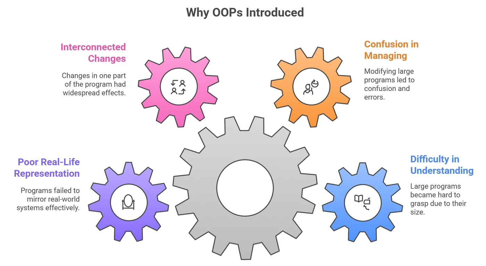
How OOP improves program structure
Object-Oriented Programming improves program structure by organising programs in a clearer way.
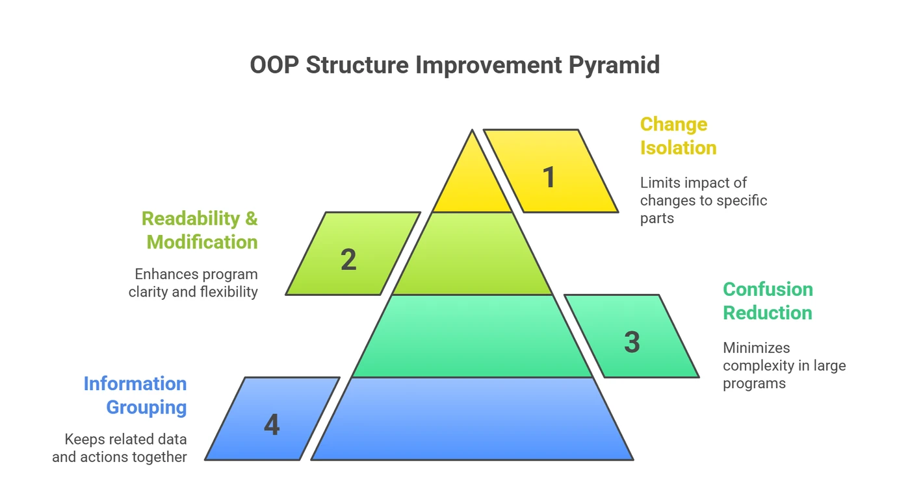
It helps by:
- 1Keeping related things togetherInformation and the actions on it sit in one place.
- 2Reducing confusionLarge programs are split into understandable pieces.
- 3Making code easier to read and modifyYou know where to look for each thing.
- 4Limiting the impact of changesA change stays inside one part instead of rippling everywhere.
This structured organisation makes programs easier to handle as they grow.
Class: the blueprint
A class is a blueprint, plan, model or design that describes how objects should be created. It specifies:
Properties
What information each object will have, like a name or an age.
Behaviours
What each object can do, like talking or walking. In code these are methods.
A class itself does not represent a real or usable entity. It is strictly a definition, a “logical” existence rather than a “physical” one.
Nature of a class
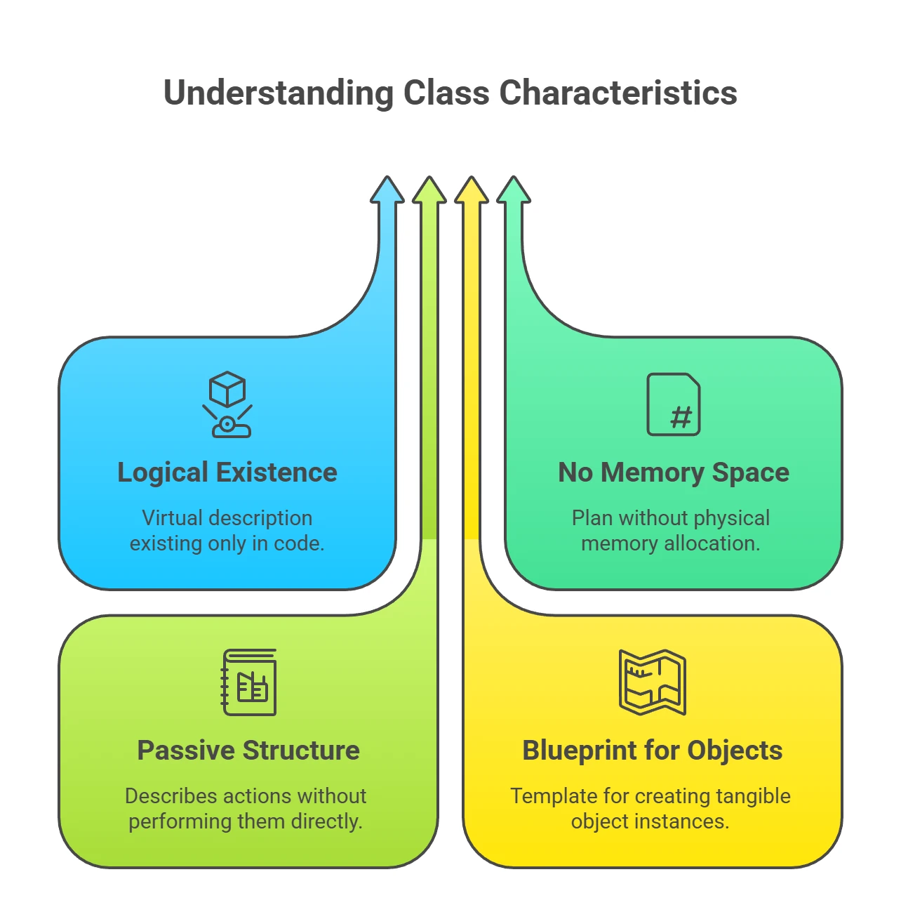
- Logical existence: a class is a “virtual” description. It exists only in your code as a definition, not as a real entity.
- No memory space (for data): since a class is just a plan and not a physical object, it does not occupy memory space for storing data. A class doesn’t store any particular student’s name or marks; that data lives in the objects.
- Passive structure: a class cannot perform actions directly. It only describes the actions that its objects will perform later.
- Blueprint for objects: the “physical reality” built from a class is called an object.
Define once, create many
A class is reusable: write the plan once, then create as many objects as you need.
| Plan (class) | Result (objects) |
|---|---|
| One building blueprint | Many buildings |
| One TV design | Thousands of physical TVs |
One Student class | Many real students: Rahul, Priya, Amit… |
Defining a class in Python
class Student:
"""This is a description of the Student class"""
# Inside here, we would define properties and behaviors
pass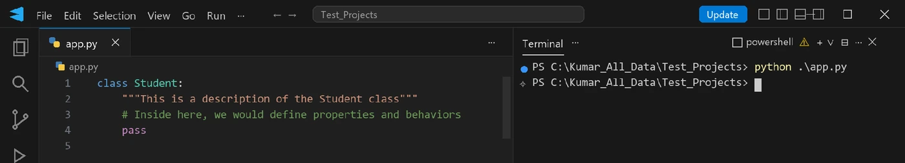
class — the keyword that tells Python you are creating a blueprint.
Student — the class name. By convention it starts with a Capital Letter.
The docstring — an optional description of the class.
pass — a temporary keyword used when we want to keep the class empty for now.
Object: the real thing
An object is the real, usable entity created from a class. The class says how to build something; the object is the thing actually built and used to do work. Creating an object is also called creating an instance.
Nature of an object
Physical existence
It really exists in the program while it runs.
Uses memory
It occupies space in memory to store its data.
Actual data
It holds real values, like “Rahul” and 101.
Performs actions
It carries out the methods defined in its class.
Without objects, a program can’t do anything meaningful with a class: the class is only instructions.
Simple examples of objects
To help you visualise what an object is inside a program, here are a few simple examples based on different “blueprints” (classes):
| If the class (blueprint) is… | An object (real entity) could be… |
|---|---|
Student | A student named “Rahul” with roll no. 101 |
MobilePhone | Your iPhone, with its own serial number and battery level |
BankAccount | Priya’s account with a balance of ₹500 |
Television | The LG TV in your living room with volume set to 20 |
In each case, the class defines the general category, but the object is the specific, individual item you can actually interact with.
Creating an object in Python
You use the name of the class followed by parentheses. This process is often called “creating an instance”.
# Assuming we have a class named Student
class Student:
pass
# Creating an object
s = Student()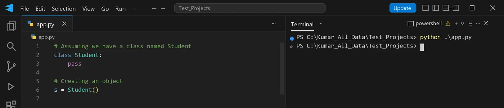
s = Student() builds a real object; nothing is printed because we never asked for output.Student(): tells Python to look at theStudentblueprint and build a real object from it.s: the variable name we use to refer to our new object so we can interact with it.
Three real-world analogies
The building blueprint. Imagine you want to construct a large building. You cannot start building immediately; you first need an architect to provide a plan or blueprint.
The plan (the class)
The blueprint specifies how many floors, rooms and windows the building will have.
The reality (the object)
You cannot live inside the blueprint; it is just paper and ink. It only becomes a “physical existence” once a builder uses the plan to construct the real building.
The TV design. Before a company like LG produces a TV, engineers create a model design.
The design (the class)
The design specifies the screen size, the thickness and the features.
The production (the object)
The design itself isn’t a TV you can watch. But from that one design, the factory can manufacture thousands of physical TVs.
The idol mold. Consider the molds used to create clay idols for festivals.
The mold (the class)
The mold is the hollow design that defines the shape.
The idol (the object)
The mold itself isn’t the idol you worship, but it is the essential tool used to create many identical idols.
Reference variables
When you create an object, Python doesn’t put the object “inside” the variable. The object lives in memory, and the variable stores a reference (think: address) to it. This concept is very important because objects are accessed only through reference variables.
A reference variable is a variable that points to an object created from a class. It does not store the actual object data; it holds a reference that lets us access the object’s variables and methods. In simple words, a reference variable acts like a name tag attached to an object, so that Python knows which object you are talking about.
How a reference variable is created
A reference variable is created when an object is created using a class.
class Student:
def __init__(self, name):
self.name = name
s1 = Student("Kumar Deepak")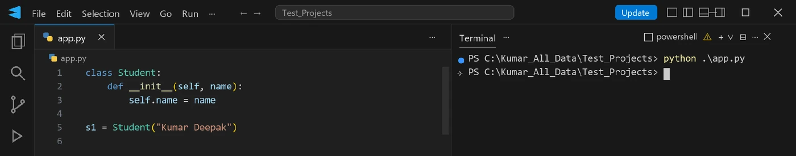
s1 now holds a reference to the new Student object.Student("Kumar Deepak")creates an object in memory.s1becomes the reference variable and stores the reference (address) of the created object.- Using
s1, we can access the object’s data and behaviour.
So s1 is not the object itself; it points to the object.
Using a reference variable to access object data
Once a reference variable exists, it is used to access the instance variables and methods of the object.
print(s1.name)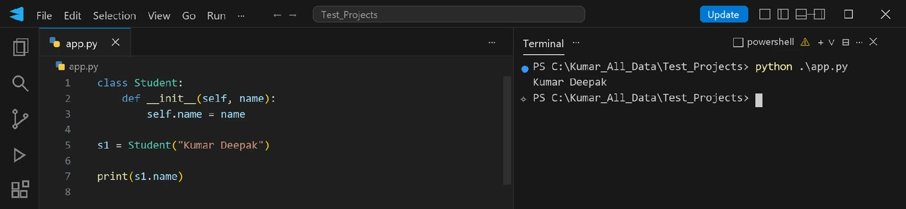
s1.name follows the reference to the object and prints Kumar Deepak.- 1s1refers to the object.
- 2.nameaccesses the data stored inside that object.
- 3No reference, no accessWithout a reference variable, the object cannot be accessed.
Real-world version: reading a phone’s brand through its reference variable.
class MobilePhone:
def __init__(self, brand):
self.brand = brand
my_phone = MobilePhone("Samsung")
print(my_phone.brand)SamsungThe self variable
self is “your” for a method: it always means the object the method is running for.self is a reference variable that always points to the current object. When an object calls the constructor or an instance method, Python automatically passes that object’s reference as the first argument, and the method receives it in the parameter named self.
Why it’s needed
A class can have many objects, each with its own name, roll number and marks. When a method runs, Python must know whose data to use. self makes sure that:
- each object works only with its own data,
- data of one object never mixes with another’s,
- the same method behaves differently for different objects.
Rules
Always first
The first parameter of __init__ and of every instance method is self.
Never passed by you
You never write a value for self. Python takes the object reference and passes it for you, on every call.
Inside the class only
self can be used only inside the class. There it creates and accesses instance variables. Outside, you use the object’s reference variable instead. This difference is very important.
While creating an object or calling a method, we never write anything for self. Python internally does the following, automatically, for every instance method call:
- 1Takes the object referencethe object that made the call.
- 2Passes it as the first argumentbefore any values you passed.
- 3Stores it in selfso the method knows which object it is working on.
self. Python quietly turns s1.greet() into Student.greet(s1).self inside the class, references outside
Creating instance variables with self
Inside the constructor, self.something = value creates an instance variable: a variable that belongs to the object being built.
class Student:
def __init__(self, name, roll_no):
self.name = name
self.roll_no = roll_no
s1 = Student("Sunny", 101)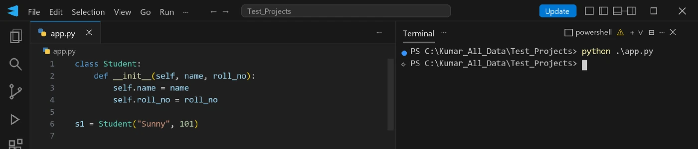
"Sunny" and 101 inside the new object.When s1 is created, an object appears in memory, self.name and self.roll_no become part of it, and the values "Sunny" and 101 are stored inside. Every new object gets its own separate set of instance variables.
Accessing them inside the class: self.variable
class Student:
def __init__(self, name, roll_no):
self.name = name
self.roll_no = roll_no
def show_details(self):
print("Student Name:", self.name)
print("Roll Number:", self.roll_no)
s1 = Student("Sunny", 101)
s1.show_details()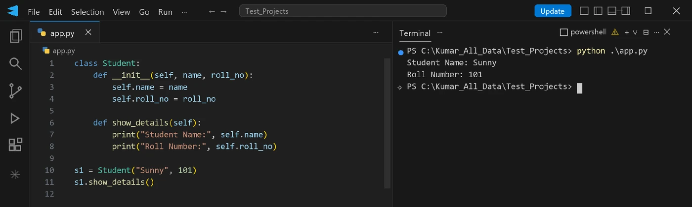
self.name and self.roll_no read the calling object’s own data.Inside show_details, self.name accesses the name stored inside the current object and self.roll_no the roll number stored inside the same object. The method always works with the data of the object that calls it.
Real-world version: a product on a shopping site displays its own name and price.
class Product:
def __init__(self, name, price):
self.name = name
self.price = price
def show_details(self):
print("Product:", self.name)
print("Price:", self.price)
p1 = Product("Headphones", 1499)
p1.show_details()Product: Headphones
Price: 1499Accessing them outside the class: reference.variable
class Student:
def __init__(self, name, roll_no):
self.name = name
self.roll_no = roll_no
s1 = Student("Sunny", 101)
print("Student Name:", s1.name)
print("Roll Number:", s1.roll_no)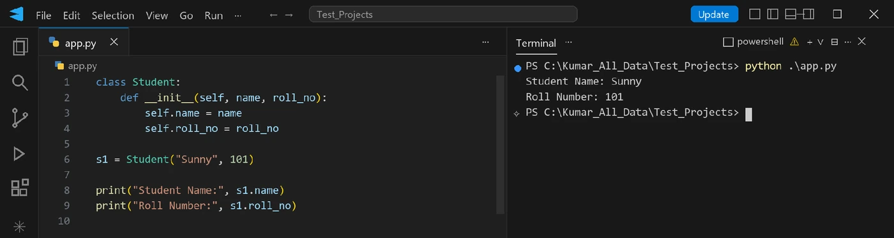
self: you go through the reference variable s1.Outside the class, s1 is the reference variable pointing to the object; s1.name and s1.roll_no access the name and roll number stored inside that object. So the rule is:
Real-world version: a library app reads a book’s title and author from outside the class.
class Book:
def __init__(self, title, author):
self.title = title
self.author = author
b1 = Book("Wings of Fire", "A. P. J. Abdul Kalam")
print("Title:", b1.title)
print("Author:", b1.author)Title: Wings of Fire
Author: A. P. J. Abdul Kalamself always means the current object
Two objects can call the same method. The code is identical, but self points to a different object in each call, so the output differs.
class Student:
def __init__(self, name):
self.name = name
def greet(self):
print("Hello, my name is", self.name)
s1 = Student("Sunny")
s2 = Student("Ravi")
s1.greet()
s2.greet()Hello, my name is Sunny
Hello, my name is RaviReal-world version: two bank customers call the same method and each sees only their own balance.
class Customer:
def __init__(self, name, balance):
self.name = name
self.balance = balance
def show_balance(self):
print(self.name, "has a balance of", self.balance)
c1 = Customer("Arjun", 5000)
c2 = Customer("Meera", 12000)
c1.show_balance()
c2.show_balance()Arjun has a balance of 5000
Meera has a balance of 12000self is not a keyword
Technically any name works for the first parameter, because Python passes the object into whatever that first parameter is called. self is a convention that Python developers everywhere follow.
class Person:
def show(name): # not 'self'
print("Hello")
p = Person()
p.show()class Person:
def show(self):
print("Hello")
p = Person()
p.show()HelloBoth print Hello. In the first, name works like self because Python automatically passes the object as the first argument, but it is confusing to read. In the second, self clearly represents the current object, which makes the code easier to read and understand. Using any other name reduces readability and is not recommended: always use self.
A common error: constructor arguments
If the constructor is defined with only self but values are passed during object creation, Python raises an error. Here is a complete example showing the error:
class Student:
def __init__(self):
self.name = "Kumar Deepak"
self.roll_no = 101
s1 = Student("Sunny", 101)TypeError: Student.__init__() takes 1 positional argument but 3 were givenThe constructor is defined to accept only one argument (self), but additional values are passed while creating the object. This mismatch causes a TypeError. Why “3 were given” when you passed two? Because Python also passes the new object as self: that’s self, "Sunny" and 101, but __init__ only accepts self.
Real-world version: a pizza order class that takes no values, while the app passes a size and a price.
class PizzaOrder:
def __init__(self):
self.size = "Medium"
self.price = 299
order = PizzaOrder("Large", 499) # TypeError: the constructor accepts only selfTypeError: PizzaOrder.__init__() takes 1 positional argument but 3 were givendef __init__(self, size, price): and store them with self.size = size, self.price = price.Points to remember about self
- It is a reference variable pointing to the current object, supplied automatically by Python.
- It is used to create and access instance variables inside the class.
- Outside the class, use the object’s reference variable instead.
- It can be used only inside the class.
- It is not a keyword but a strongly recommended convention: always use the name
self.
Key terms
- Programming paradigm
- A style of writing and organising programs, such as procedural, object-oriented or modular. It is not a programming language.
- Procedural programming
- A paradigm that splits a program into functions called in order, with data passed between them or shared globally.
- Object-Oriented Programming (OOP)
- A paradigm that organises a program into objects, each keeping related data and the actions on that data together.
- Class
- A blueprint that defines the properties and behaviours its objects will have. It does not hold any individual object’s data.
- Object (instance)
- A real entity created from a class, such as
Student("Rahul"). It lives in memory and holds its own data. - Reference variable
- A variable that stores a reference to an object rather than the object itself. Several reference variables can point to the same object.
- Instance variable
- A variable that belongs to one object, created inside the class with
self.name = value. - self
- The first parameter of the constructor and of every instance method; Python fills it automatically with the object the method is running for.
- Constructor (__init__)
- The special method Python runs automatically when an object is created, used to set up the object’s instance variables.
- Garbage collection
- Python’s automatic freeing of memory for objects that no reference variable points to any more.
Self-check
Pick an answer. You’ll see right away whether it’s correct and why.
What is a programming paradigm?
- A Python library
- A type of variable
- A style of organising and writing programs
- A compiler setting
A paradigm is a way of thinking about and structuring code. Many languages can follow the same paradigm.
Why do global variables cause trouble in large procedural programs?
- Any function can change them, so you can’t tell who changed the data or why
- They are slower than local variables
- Python doesn’t allow them
- They can only store numbers
Shared, unprotected data can be modified from anywhere, which makes bugs hard to track and functions hard to reuse.
Which statement about a class and an object is correct?
- An object is a blueprint for creating classes
- A class stores each student’s own name
- You can only create one object from a class
- A class is the blueprint; each object built from it holds its own data
Define once, create many: the class describes, and the objects are the real entities holding data.
a = Student("Asha"), then b = a, then b.name = "Neha". What does print(a.name) show?
- Asha
- Neha
- An error
- None
b = a copies the reference, not the object. Both names point to the same object, so the change is visible through a.
In s1.greet(), what value does the self parameter receive?
- Nothing, you must pass it
- The class
Student - The object
s1refers to - The string "self"
Python automatically passes the calling object as the first argument; it is equivalent to Student.greet(s1).
class A: with def __init__(self): .... What happens on A(5)?
- 5 is ignored
- TypeError: takes 1 positional argument but 2 were given
- 5 is stored in self
- The object is created with no data
Python passes the new object plus 5, two arguments, but __init__ only accepts self.
After s1 = Student("X") then s1 = Student("Y"), what happens to the “X” object if nothing else refers to it?
- It becomes eligible for garbage collection
- It merges with “Y”
- It stays reachable through
s1 - Python raises an error
Reassignment moves the name to the new object. An object with no references can’t be reached, so Python frees it.
How do you read an instance variable from outside the class?
self.nameStudent.self.namenameon its owns1.name, using the object’s reference variable
self only exists inside methods. Outside, you go through a reference variable.
All of it, in one sentence
Procedural code gets messy as it grows, so OOP bundles data and behaviour into objects built from a class blueprint; you reach each object through a reference variable, and inside its methods the object refers to itself as self.
Next up: Intro to OOP · Part 2, where you’ll meet the constructor in depth, decorators, the three kinds of variables (instance, static, local) and the three kinds of methods.
— Vishwa Mohan